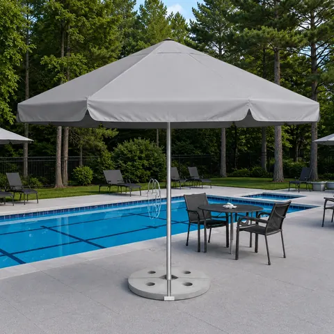
Parasol ogrodowy 3 m z podstawą 170 kg
Piwny, barowy, gastronomiczny. Podstawa 170 kg, pokrowiec.
1 500 zł
Wybierz kolor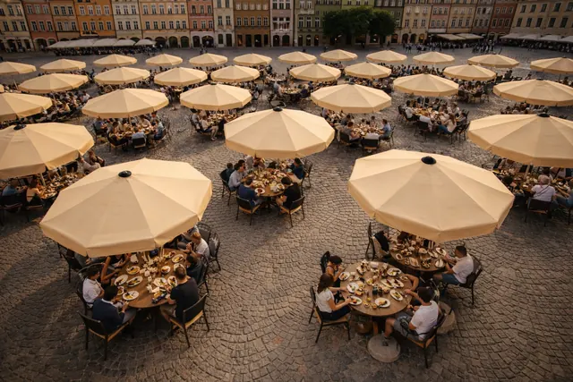
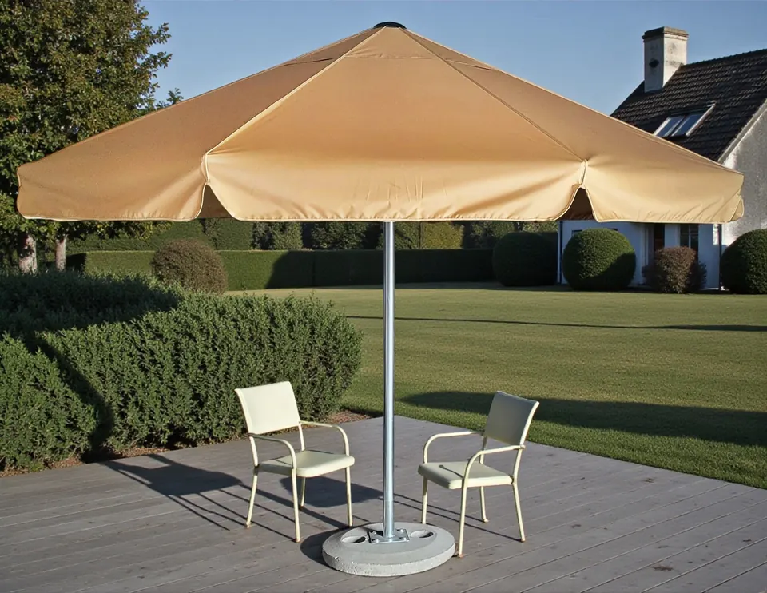
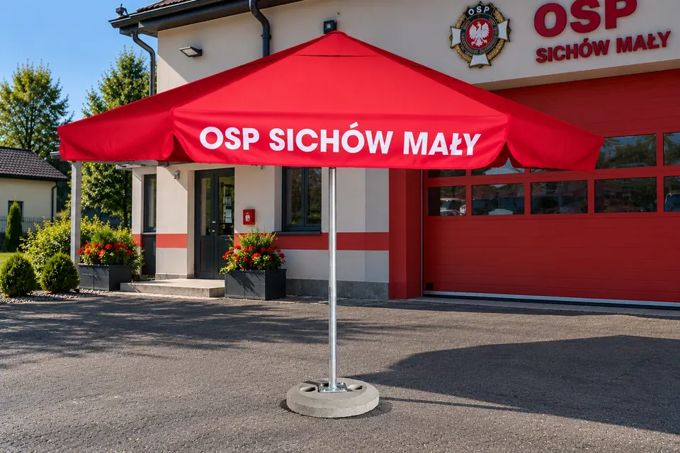
Polski producent z Brzezin. Stalowy maszt, podstawa betonowa 70 lub 170 kg i każda część parasola do dokupienia także po latach.
Średnica od 3 do 4,5 m, w komplecie podstawa betonowa i pokrowiec. Po rozpakowaniu parasol jest gotowy do rozłożenia.

Piwny, barowy, gastronomiczny. Podstawa 170 kg, pokrowiec.
1 500 zł
Wybierz kolor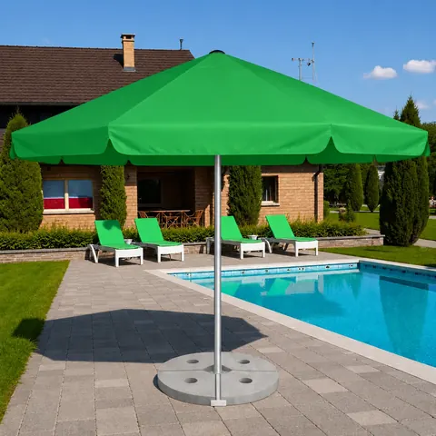
Duży parasol do ogrodu i gastronomii. Podstawa 70 kg, pokrowiec.
1 350 zł
Wybierz kolor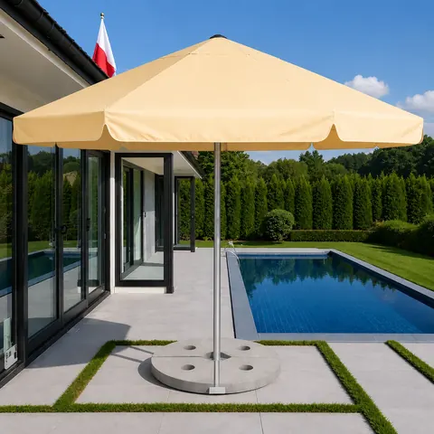
Maszt z rury 60 mm, ramiona stalowe 30 x 15 mm. Podstawa 70 kg.
1 430 zł
Wybierz kolor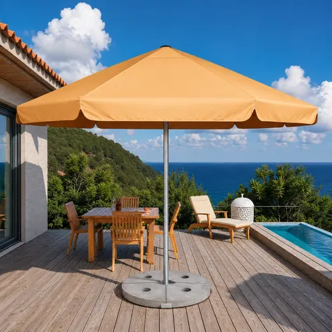
Największy cień w ofercie: do ogródków piwnych i dużych tarasów.
1 530 zł
Wybierz kolor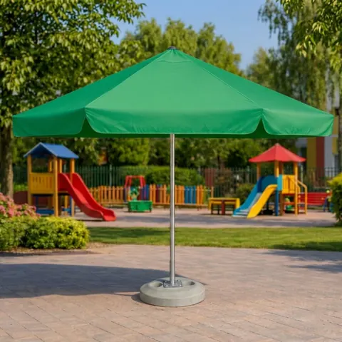
Cięższa podstawa na otwarte, wietrzne miejsca.
1 630 zł
Wybierz kolor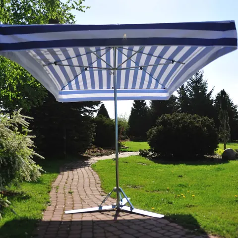
Na stoiska, targi i jarmarki. Dostępne też 2 x 2, 3 x 2 i 3 x 2,5 m.
770 zł
Wybierz rozmiarWysyłka kurierem od 280 zł
Odbiór osobisty w Brzezinach, 0 zł
Wysyłka w 24 h w 5 najpopularniejszych kolorach
Poliester 230 g/m², podwójnie impregnowany, z wywietrznikiem. Beżowy, ecru, zielony, szary i ciemnozielony wysyłamy w 24 godziny, pozostałe kolory do 6 dni roboczych.
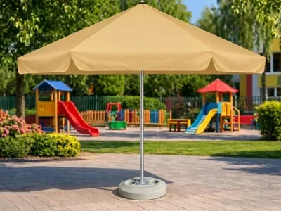
Beżowywysyłka w 24 h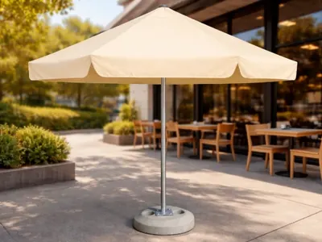
Ecruwysyłka w 24 h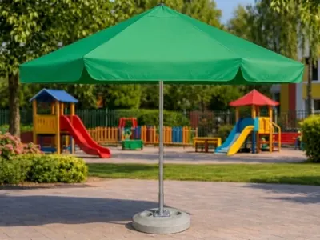
Zielonywysyłka w 24 h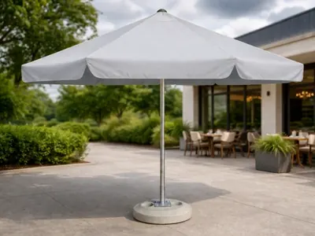
Szarywysyłka w 24 h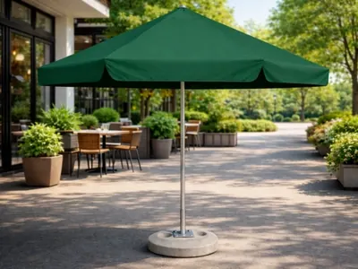
Ciemnozielonywysyłka w 24 h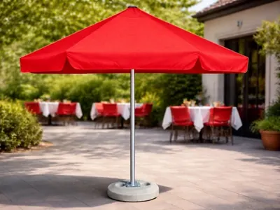
Czerwonydo 6 dni roboczych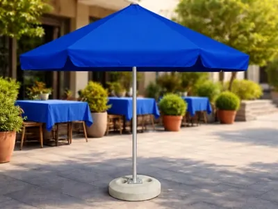
Niebieskido 6 dni roboczych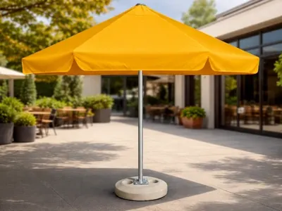
Żółtydo 6 dni roboczych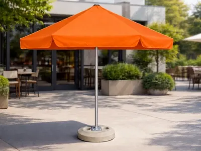
Pomarańczowydo 6 dni roboczych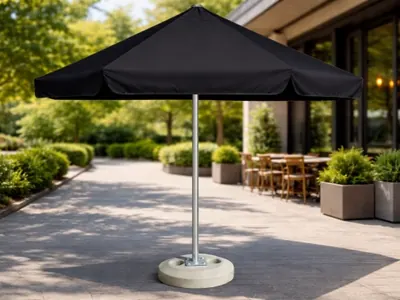
Czarnydo 6 dni roboczych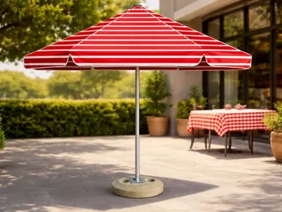
Biało-czerwonydo 6 dni roboczychNadruk robimy metodą sublimacji na trwałym poszyciu, dzięki czemu długo wygląda jak nowy. Projekt rozkładamy na 8 pól czaszy.
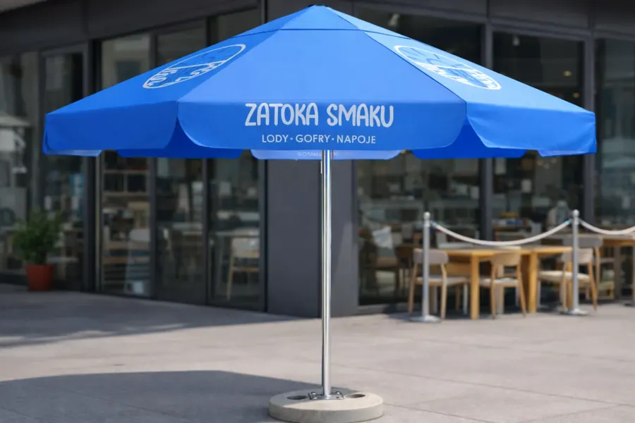
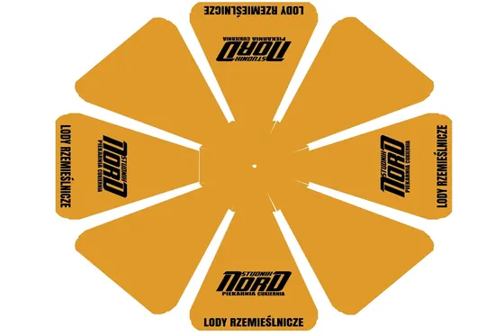
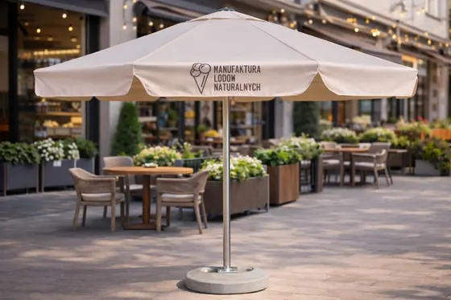
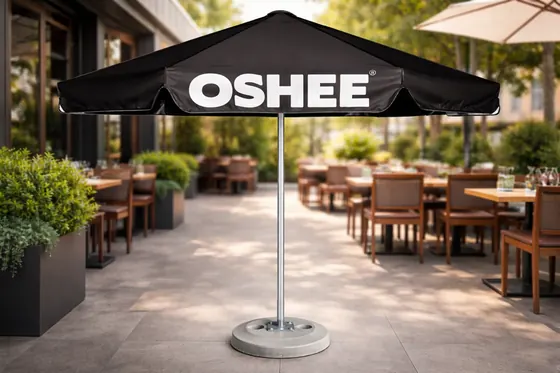
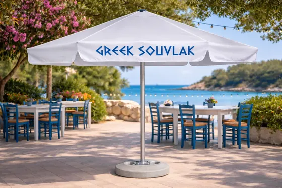
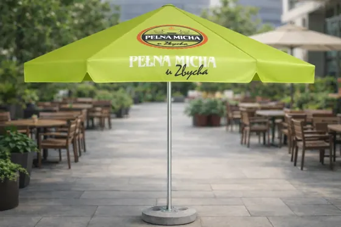
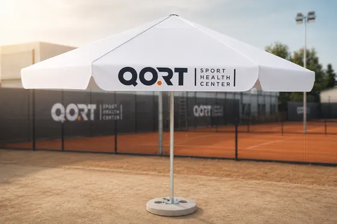
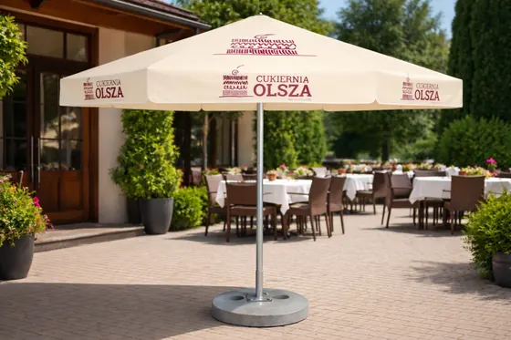
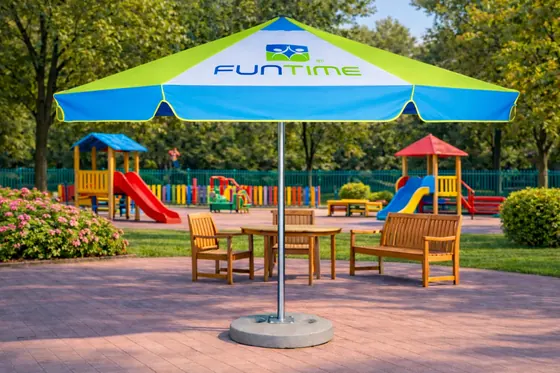
Wyposażamy parki, dziedzińce i festyny. Realizujemy zamówienia w ramach zapytań i przetargów, a instytucjom wystawiamy faktury z odroczonym terminem płatności.
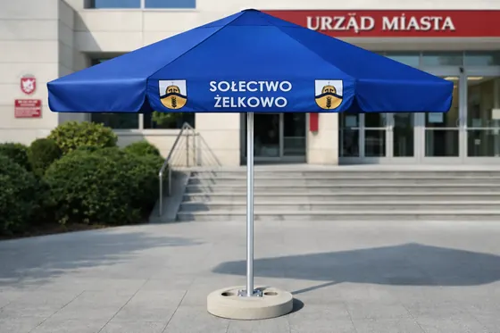
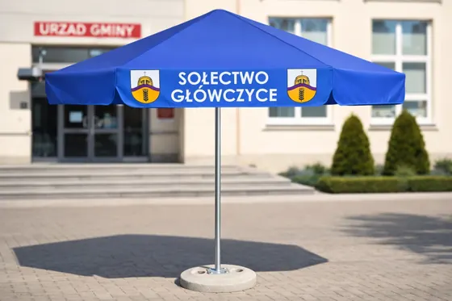
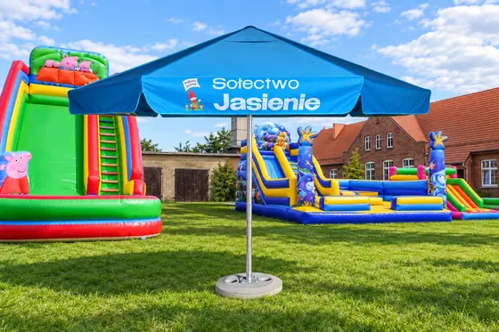
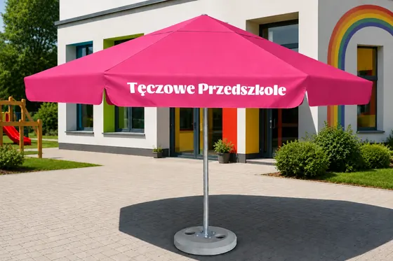
Konstrukcję robimy z profili stalowych, bez plastikowych łączników, które w parasolach z marketu pękają najszybciej.
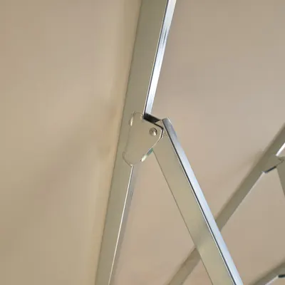
Stalowe profile 30 x 15 mm.
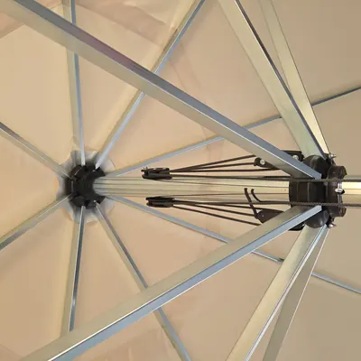
Stal ocynkowana, rura 60 mm, otwieranie na sznurek.
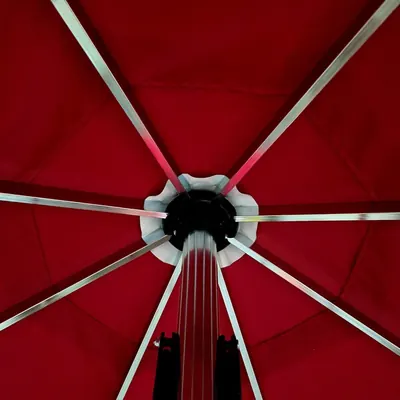
230 g/m², nieprzemakalne, obszyte lamówką.
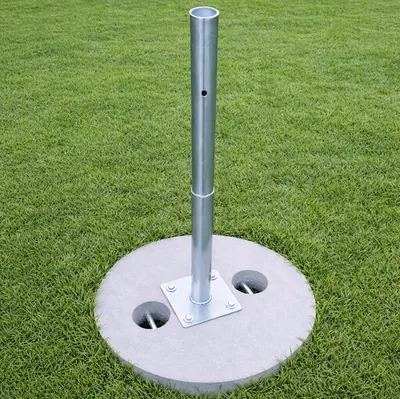
Beton z prętem zbrojeniowym, 70 lub 170 kg.
Każdą część parasola można u nas dokupić, a serwis jest dostępny przez cały czas używania parasola. Zniszczone poszycie po kilku sezonach wymienia się, a nie kupuje nowy parasol.
Zapytaj o częśćOpinie z karty produktu w sklepie Retoka.
Przepaść pomiędzy jakością tego parasola a jakością parasoli w marketach. 10/10Radek Osmalski, 01.03.2023
Wysyłka ekspresowa. Towar świetnie zapakowany. Bardzo dobra jakość. Parasol ciężki.Beata Jogińska, 13.01.2025
Dostawa w 3 dni od zamówienia, parasol sztos. Polecam.Konrad Opolski, 14.07.2022
Szybka dostawa, miły kontakt telefoniczny. Parasol 100x lepszy od tych w markecie!Ola Pakuła, 19.05.2022
Takich firm nam potrzeba. Błyskawiczna wysyłka, jakość parasola premium!Kuba Gruszewski, 05.04.2023
Parasol lepszy jakościowo od wszystkich, które do tej pory miałem. Gorąco polecam, mega twardy!Bartek Gradowski, 04.04.2022